VACF – Vacuum Pressure Too Low
Assay Processing Flag
Error Codes
| Dec | Hex |
|---|---|
|
024.001.00064 024.001.00077 |
|
Complaint Description
-
Vacuum pressure is out of range
-
Vacuum pressure is too low
-
Vacuum Duty Cycle Too Low (Quad)
-
VACF flag
Technical Support
Troubleshooting
Panther:
-
Check waste bottle cap and tighten it.
-
Replace waste bottle.
-
Grease or replace o-rings. Vacuum grease and extra o-rings are in spare parts kit.
-
Change filter. Refer to instructions in Panther Operators Manual. Most likely part number: 903401 (T8), but this part could be upgraded to ASY-11890 (Odorcarb) filter. Ask customer if filter is small or large, and refer to CTB-01016. Ensure flow arrow is pointing up!
-
If male vacuum fittings in drawer are cracked, dispatch FSE
 Field Service Engineer.. Ask customer to move or wiggle fittings, as crack may be at base.
Field Service Engineer.. Ask customer to move or wiggle fittings, as crack may be at base.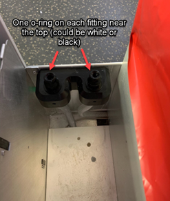
Panther Plus:
-
Change filter. Refer to instructions in Panther Operators Manual. Use part number ASY-11890 (Odorcarb) filter. Ensure flow arrow is pointing up!
-
If pressure remains low, dispatch FSE.
Possible root causes:
(Normal vacuum pressure reading: 4.0-12 Hg target 7.0 Hg.)
Vacuum pressure below 4.0 mmHg
-
Loose waste bottle cap.
-
Cracked or damaged waste bottle or fittings.
-
Broken, or unlubricated O-rings.
-
Wet vacuum filter.
-
Coalescing bottle is full.
-
Loose or kinked vacuum hose.
Vacuum pressure negative or close to 0 mmHg
-
Vacuum pump not working.
-
Vacuum manifold sensor tube clogged.
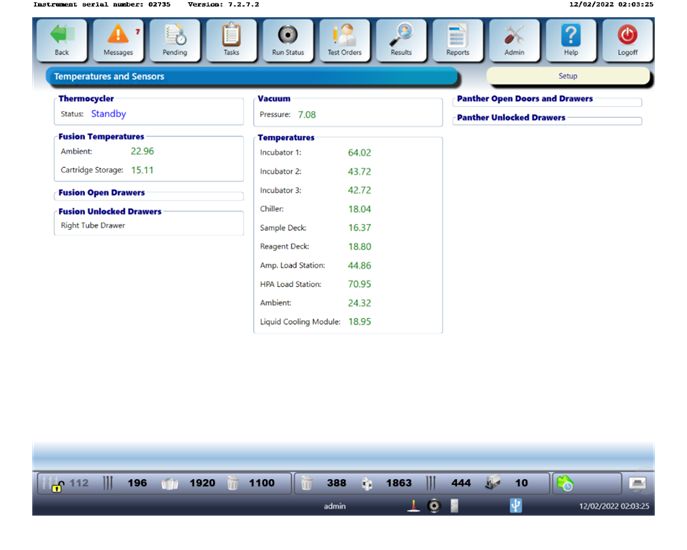
Normal vacuum pressure reading: 6.0 - 12 Hg, target 7.0 Hg.
Questions:
-
When did this happen?
-
What did they do today?
-
Ask customer to check the vacuum pressure.
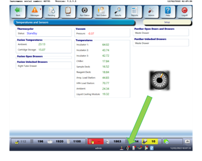
-
Is instrument Standard Panther or For Panther Plus?
For Standard Panther
|
Possible Root Cause |
Troubleshooting |
|---|---|
|
Loose waste bottle cap
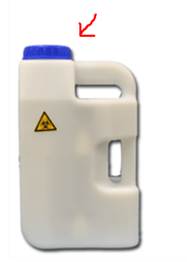 |
Check waste bottle cap and tighten it. |
|
O-rings
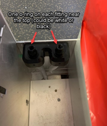 |
Lift the bottle, and inspect for cracked fittings or missing o-rings. Grease or replace o-rings. Vacuum grease and extra o-rings are in spare parts kit. |
|
Cracked or damaged waste fittings
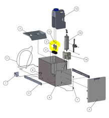 |
If male vacuum fittings in drawer are cracked, dispatch FSE. Ask customer to move or wiggle fittings. Crack may be at base.
|
|
Cracked or damaged waste bottle
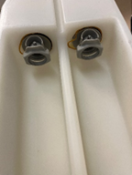 |
Check for cracks or other damage. Replace waste bottle as needed.
|
|
Wet vacuum filter
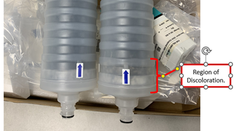
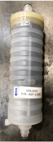 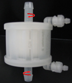 Left: SY-11890 (Odorcarb)Right: 903401 (T8) |
Ensure flow arrow is pointing up. |
|
Loose or kinked vacuum hose.
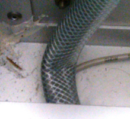 |
If vacuum hoses behind drawer are kinked, unkink or dispatch FSE if not possible |
|
Clogged tube sensor from vacuum manifold
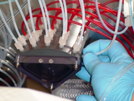 |
Unclog with a swab or an Allen key 2.5mm Note: This step is to only be performed by trained personnel. Field Engineer may need to be dispatched. |
|
Coalescing bottle is full (if the filter is wet)
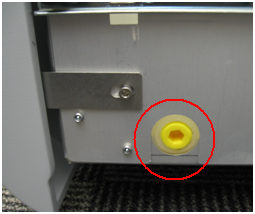 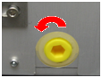 |
Empty coalescing Trap.
Note: This step is to only be performed by trained personnel. Field Engineer may need to be dispatched. This procedure is only found in the Panther Service Manual “Draining the Coalescing Trap”. |
|
Check if all tubing is well screwed in the manifold.
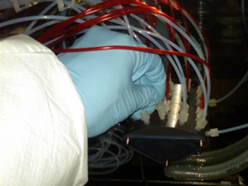 |
Make sure the instrument is off. Securely insert aspirator tubing at the Vacuum Manifold. Note: This step is to only be performed by trained personnel. Field Engineer may need to be dispatched. |
|
Check if all tubes connected to the magwash aspirators are in place.
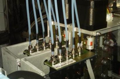 |
Make sure the instrument is off. Securely insert aspirator tubing at the Magnetic Wash Stations. Note: This step is to only be performed by trained personnel. Field Engineer may need to be dispatched. |
|
Vacuum pump not working
|
Remove waste bottle. Verify if you feel the negative pressure, and if you hear the noise.
If pump is not working, dispatch FSE. |
For Panther Plus
|
Possible Root cause |
Troubleshooting |
|---|---|
|
Vacuum filter is wet.
|
Ensure flow arrow is pointing up. |
|
Permanent Waste Bottle is not holding the vacuum pressure. |
Dispatch FSE. |
|
All fittings should be "finger tight".
|
Make sure the instrument is off. Securely insert aspirator tubing at the Vacuum Manifold. Note: This step is to only be performed by trained personnel. Field Engineer may need to be dispatched. |
|
Check if all tubings connected to the magwash aspirators are in place.
|
Make sure the instrument is off. Securely insert aspirator tubing at the Magnetic Wash Stations. Note: This step is to be performed only by trained personnel. Field Engineer may need to be dispatched. |
|
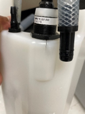 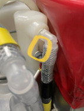 |
Cracked permanent bottle, requires an FSE to replace the bottle. |
Note: It is normal for a foamy residue to build up in the Removable Liquid Waste Bottle when customers have Waste-to-Drain. FSEs will clean the Removable Liquid Waste Bottle as part of their Total Service Call and PM activities.
Customer can:
-
Discard the foamy residue like normal liquid waste.
-
Add bleach or water to the waste bottle, and swirl to help remove the residue.
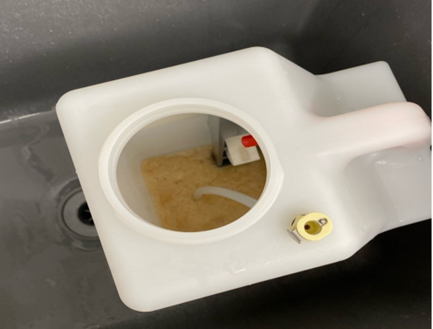
Field Service
O-rings
Stretched, broken, or unlubricated O-rings at waste bottle quick connects.
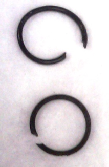
Resolution:
- Replace stretched or broken O-rings.
- Lubricate O-rings at the waste bottle quick connects.
Test:
Check for stretched, broken, or unlubricated O-rings at the waste bottle quick connects.
Kinked Hose
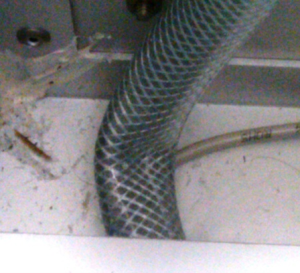
Resolution:
Un-kink or replace hoses as needed.
Test:
Visually inspect for kinked hoses.
Hose Connection
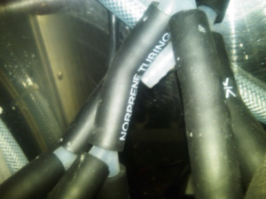
Resolution:
Tighten loose hose locks or re-connect hoses, if necessary.
Test:
Check for loose vacuum hoses.
Cracked Fitting
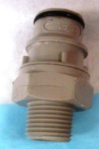
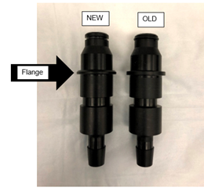
Resolution:
Replace fittings as needed.
Test:
Visually inspect for cracked fittings.
Coalescing Bottle is Full
Resolution:
Empty coalescing bottle.
Test:
Visually inspect coalescing bottle.
Vacuum Muffler
Resolution:
Clear the vacuum muffler as needed.
Test:
Make sure the muffler is not occluded or blocked in any way.
Aspirator Tubing
Loose aspirator tubing at the Magnetic Wash Station and/or Vacuum Manifold.
Resolution:
Check to see if aspirator tubing are loose at the Magnetic Wash Stations and at the Vacuum Manifold.
Test:
Securely insert aspirator tubing at the Magnetic Wash Stations and Vacuum Manifold.
Aspirators
Clogged aspirators or tubing from the Magnetic Wash Station, or clogged tubing from the Output Queue.
Resolution:
Unclog or replace aspirators or tubing.
Test:
Check tubing or aspirators for clogs.
Vacuum Manifold
Clogged Vacuum Manifold ports (especially the port leading to the pressure transducer).
Resolution:
Unclog the Vacuum Manifold ports.
Test:
Check the Vacuum Manifold ports for clogs.
Pressure Transducer
Resolution:
Replace the Vacuum pressure transducer
TEST:
Make sure the Vacuum pressure transducer does not show signs of leaks or shorted components.
Communications Cable
Disconnected communication cable for one of the Vacuum Pumps from the power break away PCB.
Resolution:
Connect the communication cable from the power break away PCB to the Vacuum Pumps, if necessary.
Test:
Check to see if the communication cable from the power break away PCB is not connected to one of the Vacuum Pumps.
PCB
Bad Vacuum Pump power break away PCB.
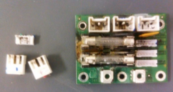
Resolution:
Replace the Vacuum Pump power break away PCB.
Test:
Make sure the Vacuum Pump power break away has no shorted components or signs of dry fluid on it.
Control Cable
Vacuum Pump control cable disconnected from the Liquid Cooling/Vacuum Module PCB.
Resolution:
Re-connect the Vacuum Pump control cable to the Liquid Cooling/Vacuum Module PCB.
Test:
Make sure the Vacuum Pump control cable is connected to the Liquid Cooling/Vacuum Module PCB.
Wiring
Wire touching the Vacuum Pump body.
Resolution:
Replace the Vacuum Pump if any of its wires are exposed.
Test:
Check to be sure wire insulation is intact.
Vacuum Pump
Resolution:
Replace the Vacuum Pump.
Test:
Use Service Software to make sure the vacuum pump is operating properly.
Vacuum Duty Cycle Too Low (Quad)
Problem:
Vacuum pressure operating at higher end of range, but vacuum would intermittently shut off.
Isolation:
Check if vacuum duty cycle in SSW lower than 50%, this can cause vacuum to cut out.
Service manual search: Ported Vacuum Manifold Cover.
Resolution:
Vacuum speed control is determined by flow rate using two threaded ports on vacuum manifold cover. In this case, the ports were not tapped through.
-
Add or remove screws.
-
If not enough screws are present, verify the ports are tapped through.
-
Left/Right ports are not the same size.
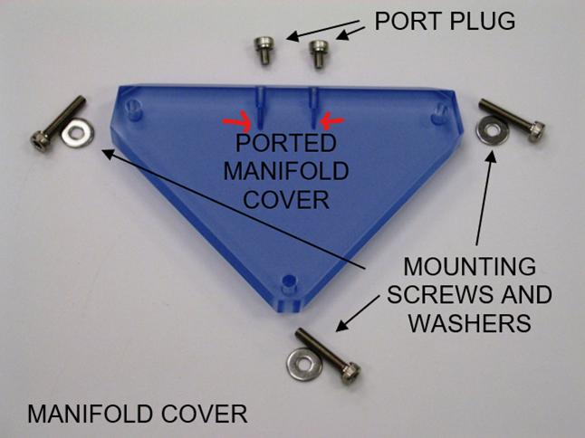
Vacuum Pressure Low for Liquid Waste on the Fly
-
Vacuum filter is wet.
-
Permanent Waste Bottle is not holding the vacuum pressure.
Note: It is normal for a foamy residue to build up in the Removable Liquid Waste Bottle when customers have Waste-to-Drain. FSEs will clean the Removable Liquid Waste Bottle as part of their Total Service Call and PM activities.
- Customer can discard the foamy residue like normal liquid waste.
- Customer can add bleach or water to the waste bottle, and swirl to help remove the residue.
Customer can:
-
Discard the foamy residue like normal liquid waste.
-
Add bleach or water to the waste bottle, and swirl to help remove the residue.
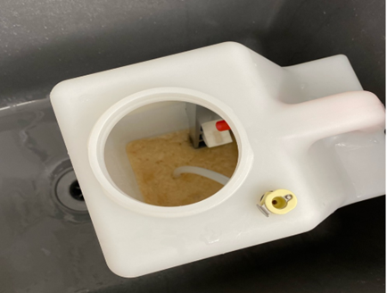
 button at the top of the page to send feedback, comments, or change requests.
button at the top of the page to send feedback, comments, or change requests.